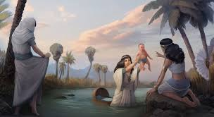
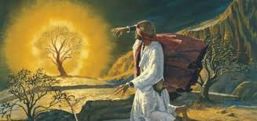
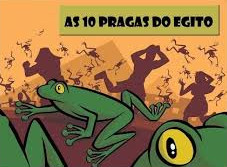
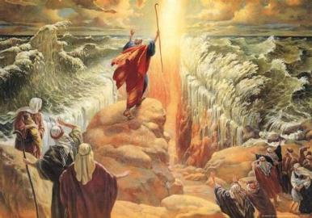

Nascido como escravo livrou-se milagrosamente ao ser encontrado pela filha do Faraó às margens do rio Nilo.

Moisés cresce no palácio junto ao seu irmão adotivo Ramsés até a idade adulta quando é chamado por Deus para libertar seu povo.

Nesta terefa, para convencer o Faraó a deixar o povo partir Moisés, autorizado por Deus, lançou sobre o Egito 10 pragas
- As águas do Nilo viram sangue
- Infestação de rãs
- Infestação de piolhos
- Infestação de moscas
- Morte dos animais
- Tumores sobre os egípcios
- Chuva de granizo
- Infestação de gafanhotos
- Escuridão de 3 dias
- Morte dos primogênitos

Os manifestos de Deus por meio de Moisés durante o êxodo foram:
- Abertura do Mar Vermelho
- A nuvem sobre o povo durante o dia para fazer sombra, e um clarão durante a noite para aquecer
- Vinda do maná e das codornas para alimentar o povo
- Retirada de água da rocha para saciar a sede do povo
- Cobra de bronze para salvar o povo das picadas de cobras
- Os 10 mandamentos
